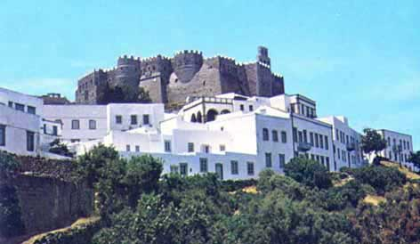

Το κάστρο - μοναστήρι της Πάτμου
 Πάνω στα ερείπια του αρχαίου ναού της Αρτέμιδος, ιδρύθηκε το 1088 από τον Όσιο Χριστόδουλο και με άδεια του αυτοκράτορα Αλεξίου Α΄ του Κομνηνού, η μονή προς τιμή του Αγίου Ιωάννη. Το μοναστήρι πήρε σταδιακά τη μορφή κάστρου, προκειμένου να προστατευθεί από τις επιθέσεις Σελτζούκων, Τουρκομάνων και Οθωμανών Τούρκων. Οι κάτοικοι του νησιού άρχισαν να κατοικούν γύρω του μετά το 1132, ώστε να μπορούν να προφυλάσσονται στο εσωτερικό του σε περίπτωση κινδύνου. Από τους Ιωαννίτες έως τους Οθωμανούς Τούρκους το μοναστήρι ενέπνευσε σεβασμό λόγω του ιδιαίτερου θρησκευτικού του χαρακτήρα και γνώρισε μεγάλη ακμή. Στα χρόνια της τουρκοκρατίας σημαντικό ρόλο έπαιξε η Πατμιάδα Σχολή, από την οποία αποφοίτησαν σημαντικοί πατριάρχες και λόγιοι. Το νησί, πατρίδα του Εμμανουήλ Ξάνθου, ενός από τους ιδρυτές της Φιλικής Εταιρείας, έλαβε ενεργό ρόλο στην Επανάσταση του 1821. | ||